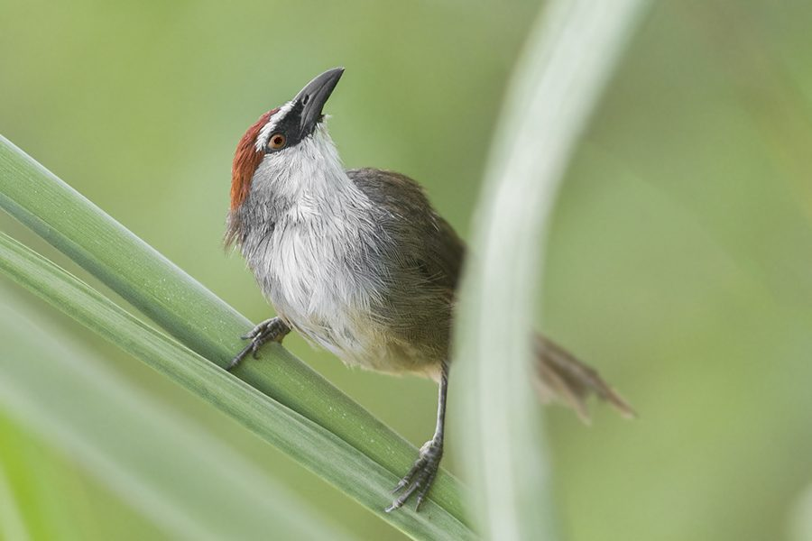

चेस्टनट-कैप्ड बैबलरChestnut-capped Babbler
Timalia pileata · Timaliidae · BRD-0271

- Scientific name वैज्ञानिक नाम
- Timalia pileata Horsfield, 1821
- Family कुल
- Timaliidae
- Hindi हिंदी
- चेस्टनट-कैप्ड बैबलर
- Local names स्थानीय नाम
- chestnut-capped babbler, chestnut capped babbler, lal siri babbler
- Status here यहाँ की स्थिति
- native
- Movement आवागमन
- Resident, here all year
- Known from कहाँ दर्ज
- Others have published records from the wider Awadh–Purvanchal plain, none yet from Basti–Ayodhya अवध–पूर्वांचल से दूसरों के प्रकाशित अभिलेख, बस्ती–अयोध्या से अभी नहीं
- IUCN IUCN
- not evaluated
- Review समीक्षा
- not yet reviewed
When to look कब देखें
Present all year. साल भर मौजूद।
Tell it apart from इनसे अलग पहचानें
चेस्टनट-कैप्ड बैबलर / Chestnut-capped Babbler
Timalia pileata Horsfield, 1821 — Timaliidae
चेस्टनट-कैप्ड बैबलर — यह तराई और बड़ी नदियों के कछारों में घनी घासों और नरकुल के झुरमुटों में छिपकर रहने वाला एक सुंदर पक्षी है। इसके सिर पर गहरे लाल-कत्थई रंग की आकर्षक टोपी जैसी कलगी होती है और माथा व आंख के ऊपर की पट्टी सफेद होती है। इसका गला सफेद होता है जिस पर बारीक काली लकीरें बनी होती हैं। यह घास के भीतर रहकर मधुर सीटी जैसी आवाजें निकालता है और जमीन पर रेंगने वाले कीड़ों को खाता है।
Quick Identification त्वरित पहचान
| Feature | Description |
|---|---|
| Body size | Medium-sized, robust babbler with a rounded tail (Grimmett et al. 2011) |
| Crown cap | Rich chestnut-red crown cap, contrasting with white forehead and white supercilium |
| Face & Lores | Black lores and stout black bill; dark red iris imparting a fierce expression |
| Throat & Breast | White chin and throat, finely streaked with delicate black shaft-lines |
| Upperparts | Warm olive-brown mantle and wings, passing into a long, graduated brown tail |
| Underparts | Buff-ochraceous belly and flanks, blending smoothly with the streaked breast |
Field tip: Listen for distinct explosive bubbling whistles emerging from dense Kans grass (Saccharum) thickets near wetland edges at dawn.
हिंदी: इसके सिर पर लाल-कत्थई टोपी, माथे पर सफेद पट्टी और सफेद गले पर बारीक काली लकीरें होती हैं। यह घनी घास के भीतर छिपकर बोलता है।
Morphology आकारिकी
The crown is bright chestnut-rufous, bounded in front by a narrow white forehead band and bordered on either side by a prominent white superciliary stripe that extends behind the eye. The lores and a narrow ring around the orbit are jet-black. The bill is heavy, deep, compressed, and black. The chin and throat are white, finely decorated with delicate black vertical shaft-streaks on each feather. The rest of the upper plumage is warm olive-brown. The breast is tinged with buff, merging into ochraceous-tawny on the flanks, belly, and undertail-coverts. The tail is broad, rounded, and distinctly cross-barred with fine dark lines (Rasmussen & Anderton 2012).
Vocalisations. The territorial call is a loud, ringing, liquid whistle rendered as a cheerful twee-twee-churr or bubbling pu-pu-pu-pu-whit. Contact calls inside dense grass consist of low churring rattles and scolding chucks exchanged between family group members.
हिंदी: इसके सिर का कत्थई रंग बहुत चमकदार होता है। काली चोंच मजबूत होती है और गले पर बारीक लकीरें होती हैं। इसकी सीटी जैसी सुरीली आवाज काफी दूर तक सुनाई देती है।
Behaviour & Ecology व्यवहार और पारिस्थितिकी
The chestnut-capped babbler is a secretive, highly skulking bird of dense tall grasslands, reed beds (Phragmites), and overgrown floodplain swamps. It typically moves in pairs or small family parties of four to six individuals, clambering stealthily through the tangled bases of giant grass stems and emergent vegetation. It rarely flies across open spaces, preferring to flit across narrow gaps with rapid whirring wingbeats and splayed tail before diving back into thick cover. While foraging, it probes leaf litter, peeling grass sheaths, and damp ground hummocks, maintaining contact with continuous soft calls.
हिंदी: यह जोड़े में या छोटे परिवारों में घनी घासों के निचले हिस्से में रहकर भोजन तलाशता है। यह खुले में बहुत कम उड़ता है और घास के भीतर ही फुदकता रहता है।
Life Cycle / Phenology जीवन चक्र
Breeding takes place primarily during the pre-monsoon and monsoon months from April to August. The nest is a bulky, loose dome or deep cup with a lateral entrance, constructed from broad dry grass blades, bamboo leaves, and fibrous roots, concealed near ground level in dense grass tussocks. The female lays a clutch of 3 to 5 glossy white or pale pinkish eggs speckled with fine reddish-brown dots (Ali & Ripley 1983). Both parents participate in nest building, incubation, and provisioning of the nestlings.
हिंदी: अप्रैल से अगस्त के बीच घनी घास के भीतर जमीन के पास यह अपना गोल घोंसला बनाता है। मादा 3 से 5 हल्के गुलाबी धब्बेदार अंडे देती है जिनकी दोनों माता-पिता देखभाल करते हैं।
Host Plants or Prey आहार
The diet is predominantly insectivorous, supplemented with small seeds and berries. It feeds on caterpillars, small beetles, grasshoppers, crickets, ants, termites, and spiders encountered on the ground or gleaned from grass culms. In the winter months, it also consumes flower nectar and berries from riparian bushes such as wild jujube (Ziziphus) and lantana when foraging in edge scrub.
हिंदी: इसका मुख्य भोजन घास में मिलने वाले कीड़े, इल्लियां, टिड्डे, दीमक और मकड़ियां हैं। सर्दियों में यह जंगली झाड़ियों के बेर और मकरंद भी खा लेता है।
Predators / Natural Enemies शत्रु
Natural predators in riparian grassland habitats include small accipiter hawks such as the Shikra (Accipiter badius) and marsh harriers. Terrestrial predators including the jungle cat (Felis chaus) and small Indian mongoose (Urva auropunctata) stalk foraging babblers through grass tunnels. Snakes like the Indian Rat Snake (Ptyas mucosa) and Checkered Keelback (Fowlea piscator) prey on ground nests.
हिंदी: शिकरा और दलदली चील इसका शिकार करते हैं। जमीन पर जंगली बिल्ली और नेवला घास के भीतर दबे पांव आकर इसे पकड़ते हैं। सांप इसके घोंसलों से अंडे खा जाते हैं।
Agricultural / Human Relevance कृषि प्रासंगिकता
In the floodplain fringes of eastern Uttar Pradesh, this babbler contributes to natural pest suppression by feeding on grass-dwelling insect pests that disperse into bordering sugarcane and millet fields. It causes no agricultural damage. It is protected under the Wildlife (Protection) Act 1972. The rapid conversion of floodplain grasslands to intensive agriculture and commercial sand mining represent severe threats to its specialized riparian habitat.
हिंदी: यह कछारी फसलों को नुकसान पहुंचाने वाले घास के कीड़ों को खाकर पर्यावरण का संतुलन बनाए रखता है। यह कानूनी रूप से पूरी तरह संरक्षित है।
Expected Locally स्थानीय रूप से अपेक्षित
Not a field record. Written from published accounts for eastern Uttar Pradesh. No confirmed local sighting yet — if you have seen it, that is what the atlas needs.
अभी तक स्थानीय पुष्टि नहीं। यह विवरण प्रकाशित स्रोतों से है, किसी अवलोकन से नहीं।
In Basti and Ayodhya districts, optimal search localities include the vast tall grasslands of Bakhira Bird Sanctuary, uncultivated river islands along the Ghaghara, and marshy reed beds bordering the Kuwana River. Listening for its liquid whistling calls at dawn during the pre-monsoon and monsoon months from May to August offers the best chance of detection. GBIF holds published records from the wider Awadh–Purvanchal plain, none yet from Basti–Ayodhya. A first confirmed record requires a clear photograph displaying the chestnut crown cap, white forehead, and streaked throat submitted through the atlas platform.
Distribution वितरण
Global range: Widespread across the Indian subcontinent and Southeast Asia, from northern India through Nepal, Bangladesh, Myanmar, Thailand, to Java.
In India: Distributed through the northern plains and Terai belt of Uttar Pradesh, Bihar, West Bengal, Assam, and the northeastern valleys.
In Uttar Pradesh: Recorded in riverine grasslands and wetland complexes across the Terai and eastern districts.
In Basti district / eastern UP: Expected along the extensive floodplains of the Ghaghara and Kuwana rivers in tall grass tracts.
हिंदी: यह भारत, नेपाल, बांग्लादेश और दक्षिण-पूर्व एशिया के मैदानी इलाकों में पाई जाती है। उत्तर प्रदेश के तराई और पूर्वांचल के कछारों में इसका वास है।
Research Questions शोध प्रश्न
- How do seasonal flood inundations in the Ghaghara basin influence the home range and breeding timing of this grassland babbler? / घाघरा की बाढ़ से इसके रहने के इलाके और घोंसला बनाने के समय पर क्या असर पड़ता है?
- What are the key nest concealment requirements that protect ground nests from trampling by domestic livestock? / पालतू मवेशियों से बचाने के लिए यह घास में कितनी गहराई पर घोंसला छिपाती है?
- What is the extent of genetic connectivity between fragmented grassland populations along the Ghaghara corridor?
- How does the invasion of woody shrubs into alluvial grasslands alter foraging niche availability?
- Can local boatmen and fishermen be trained to identify babbler calls along river island tall grass beds? / क्या कछारी नाविकों को इसकी सुरीली आवाज पहचानकर इसे दर्ज करने के लिए प्रशिक्षित किया जा सकता है?
Similar Species मिलती-जुलती प्रजातियाँ
| Species | How to tell apart | हिंदी | |
|---|---|---|---|
| Tawny-bellied Babbler \ | Dumetia hyperythra | Lacks the chestnut-red crown cap, white forehead, and black lores; has uniform rufous-buff underparts and grey-brown crown (Grimmett et al. 2011) | टॉनी-बेलिड बैबलर के सिर पर कत्थई टोपी और सफेद माथा नहीं होता, इसका निचला हिस्सा एकसमान बादामी होता है |
| Yellow-eyed Babbler \ | Chrysomma sinense | Features bright orange-yellow eye-rings, white lores and eyebrow, cinnamon-brown wings, and unstreaked white throat | यलो-आईड बैबलर की आंख पर पीला छल्ला होता है और इसके गले पर काली लकीरें नहीं होतीं |
| Striated Babbler \ | Argya earlei | Much larger in body size, heavily streaked greyish-brown all over, with a long graduated tail and pale eyes | स्ट्रिएटेड बैबलर काफी बड़ा होता है और इसके पूरे शरीर पर गहरी लकीरें होती हैं |
Field rule: Grassland babbler with bright chestnut-red crown cap, white forehead and supercilium, stout black bill, and black-streaked white throat.
हिंदी: सिर पर चमकदार कत्थई टोपी, सफेद माथे और काली लकीरों वाले सफेद गले वाला घनी घास का बैबलर।
Taxonomy & Classification वर्गीकरण
Original description. Horsfield (1821), Systematic arrangement and description of birds from the island of Java, Transactions of the Linnean Society of London, 13, p. 151; type locality: Java, Indonesia.
Subspecies. The northern continental subspecies occurring across the Gangetic plain is Timalia pileata bengalensis Godwin-Austen, 1872.
Family and order placement. Placed in the monotypic genus Timalia Horsfield, 1821, family Timaliidae, order Passeriformes.
Phylogenetic notes. Represents the sole member of its genus, occupying a distinctive evolutionary branch within the Old World babblers specialized for dense grassland ecosystems.
IUCN status rationale. Not evaluated by the IUCN Red List; widely distributed across the river basins of South and Southeast Asia.
हिंदी: थॉमस हॉर्सफील्ड ने 1821 में जावा से इसका पहला वैज्ञानिक विवरण दिया था। यह टिमालीइडे कुल के टिमालिया वंश का एकमात्र सदस्य है।
Photo Gallery फोटो गैलरी
No photos yet — add field photos to media/species/chestnut_capped_babbler/ and run node scripts/sync_photos.js.
Photos needed आवश्यक फोटो
- [ ] Habitat view showing typical local microhabitat (प्राकृतिक वास का विस्तृत परिदृश्य)
- [ ] Profile of adult showing bright chestnut crown and white forehead (कत्थई टोपी और सफेद माथे का स्पष्ट दृश्य)
- [ ] Close-up of white throat displaying delicate black shaft-streaks (सफेद गले की बारीक काली लकीरों का क्लोज-अप दृश्य)
- [ ] Individual foraging in dense Kans grass stems (कांस की घनी घास के भीतर फुदकती चिड़िया)
References संदर्भ
- Original description: Horsfield, 1821 — see GBIF.
- Grimmett, R., Inskipp, C. & Inskipp, T. (2011). Birds of the Indian Subcontinent. Christopher Helm, London.
- Rasmussen, P. C. & Anderton, J. C. (2012). Birds of South Asia: The Ripley Guide. Vols. 1 and 2. Lynx Edicions, Barcelona.
- Ali, S. & Ripley, S. D. (1983). Handbook of the Birds of India and Pakistan. Compact ed. Oxford University Press, New Delhi.
- GBIF Occurrence Data — Timalia pileata, India (2025).
Source file: species/fauna/birds/chestnut_capped_babbler.md